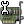
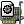

可以使用下任一方式开始捕捉包
使用
 打开捕捉接口对话框，浏览可用的本地网络接口，见图 4.1 “"Capture Interfaces"捕捉接口对话框”,
打开捕捉接口对话框，浏览可用的本地网络接口，见图 4.1 “"Capture Interfaces"捕捉接口对话框”,选择您需要进行捕捉的接口启动捕捉
你也可以使用"捕捉选项"按钮启动对话框开始捕捉，见图 4.2 “"Capture Option/捕捉选项"对话框”
如果您前次捕捉时的设置和现在的要求一样，您可以点击"开始捕捉"按钮或者是菜单项立即开始本次捕捉。
如果你已经知道捕捉接口的名称，可以使用如下命令从命令行开始捕捉：
wireshark -i eth0 -k
上述命令会从eht0接口开始捕捉，有关命令行的介绍参见第 9.2 节 “从命令行启动Wireshark”